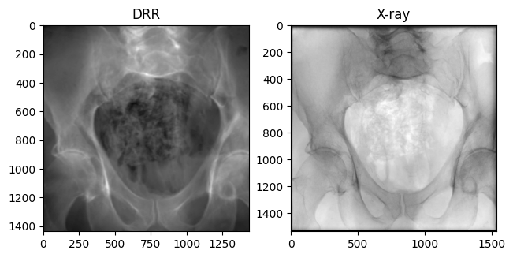
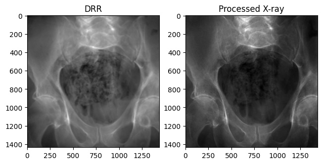
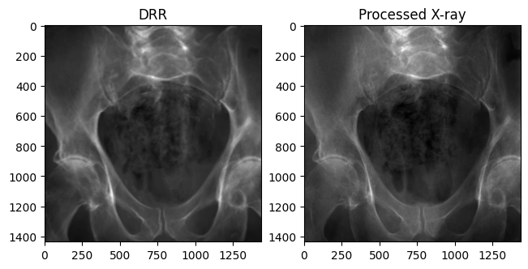
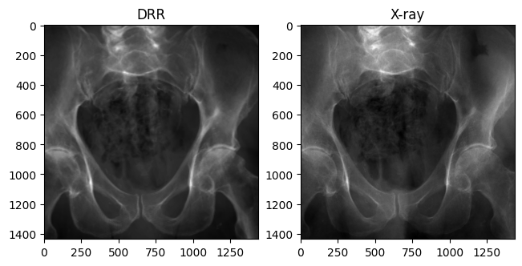
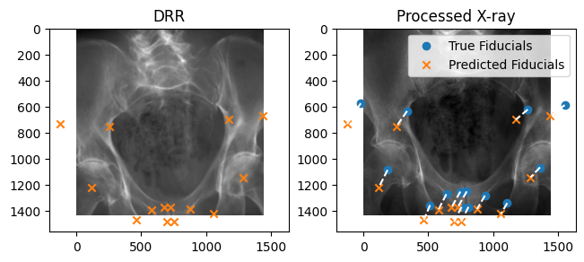

import matplotlib.pyplot as plt
from diffdrr.drr import DRR
from tqdm import tqdmDeepFluoro dataset
PyTorch wrapper for the DeepFluoro dataset with parsing of pose parameters
DeepFluoro
<unknown>:294: SyntaxWarning: invalid escape sequence '\l'DeepFluoroDataset
DeepFluoroDataset (id_number:int, filename:Union[str,pathlib._local.Path,NoneType]=None, preprocess:bool=True)
*Get X-ray projections and poses from specimens in the DeepFluoro dataset.
Given a specimen ID and projection index, returns the projection and the camera matrix for DiffDRR.*
| Type | Default | Details | |
|---|---|---|---|
| id_number | int | Specimen number (1-6) | |
| filename | Union | None | Path to DeepFluoro h5 file |
| preprocess | bool | True | Preprocess X-rays |
convert_diffdrr_to_deepfluoro
convert_diffdrr_to_deepfluoro (specimen, pose:diffpose.calibration.RigidTransform)
Transform the camera coordinate system used in DiffDRR to the convention used by DeepFluoro.
convert_deepfluoro_to_diffdrr
convert_deepfluoro_to_diffdrr (specimen, pose:diffpose.calibration.RigidTransform)
Transform the camera coordinate system used in DeepFluoro to the convention used by DiffDRR.
Evaluator
Evaluator (specimen, idx)
Initialize self. See help(type(self)) for accurate signature.
<unknown>:3: SyntaxWarning: invalid escape sequence '\l'preprocess
preprocess (img, size=None, initial_energy=tensor(65487.))
*Recover the line integral: \(L[i,j] = \log I_0 - \log I_f[i,j]\)
- Remove edge due to collimator
- Smooth the image to make less noisy
- Subtract the log initial energy for each ray
- Recover the line integral image
- Rescale image to [0, 1]*
Basic functionalities
DeepFluoroDataset is a torch.utils.data.Dataset that stores imaging data (volume, spacing, and focal_len) and provides an API for getting X-ray images and associated camera poses. The imaging data can be passed to a diffdrr.drr.DRR to render DRRs from a specific patient.
Note
X-rays in the DeepFluoro dataset are (1536, 1536) with pixel spacing of 0.194 mm. To adjust for removing the collimator (50 pixel border), 100 pixels are subtracted from the detector plane dimensions.
filename = "../../data/ipcai_2020_full_res_data.h5"
specimen = DeepFluoroDataset(1, filename=filename, preprocess=False)
device = torch.device("cuda" if torch.cuda.is_available() else "cpu")
height = 1536 - 100
dx = 0.194
drr = DRR(
specimen.volume,
specimen.spacing,
sdr=specimen.focal_len / 2,
height=height,
delx=dx,
x0=specimen.x0,
y0=specimen.y0,
reverse_x_axis=True,
patch_size=359,
).to(device)# Rotate the C-arm by the pose parameters to recover the original image
true_xray, pose = specimen[0]
pred_xray = drr(None, None, None, pose=pose.to(device))::: {#cell-bone_attenuation_multiplier=1.0 .cell}
Code
plt.figure(constrained_layout=True)
plt.subplot(121)
plt.title("DRR")
plt.imshow(pred_xray.squeeze().cpu().numpy(), cmap="gray")
plt.subplot(122)
plt.title("X-ray")
plt.imshow(true_xray.squeeze(), cmap="gray")
plt.show()
:::
Preprocessing X-rays
The true X-ray images need to be processed before they look like our DRRs:
- Crop 50 pixels off each edge to remove the effects of the collimator
- Invert the imaging equation to recover the line integral radiograph
- Rescale the image to [0, 1]
From the Beer-Lambert Law, the equation governing fluoroscopy images is \[\begin{equation} I_f[i, j] = I_0 \exp(-L[i, j]) \,, \end{equation}\] where \(L[i, j]\) is the line integral of an X-ray through the volume. Inverting this, we recover \[\begin{equation} L[i,j] = \log I_0 - \log I_f[i,j] \,, \end{equation}\] where the constant \(I_0\) for each image represents the initial energy of each ray. We approximate \(I_0 = \max_{i,j} I_f[i,j]\), assuming that this represents a ray that reached the detector plane without first intersecting the volume.
Code
specimen = DeepFluoroDataset(
1,
filename=filename,
preprocess=True, # Set as True to preprocess images
)
processed_xray, _ = specimen[0]
plt.figure(constrained_layout=True)
plt.subplot(121)
plt.title("DRR")
plt.imshow(pred_xray.squeeze().cpu().numpy(), cmap="gray")
plt.subplot(122)
plt.title("Processed X-ray")
plt.imshow(processed_xray.squeeze(), cmap="gray")
plt.show()
Changing bone attenuation for DRRs
We can preprocess the CT by segmenting air, soft tissue, and bone before generating DRRs.
- Using
bone_attenuation_multiplier = 1.0(default) sets the value of air voxels to 0 - Increasing
bone_attenuation_multiplierweights the density of bones higher than that of soft tissue (i.e., increases contrast in the DRR)
Note
bone_attenuation_multiplier between [1.0, 3.0] seems to work well for most images in this dataset.
::: {#cell-bone_attenuation_multiplier = 2.5 .cell}
Code
drr = DRR(
specimen.volume,
specimen.spacing,
sdr=specimen.focal_len / 2,
height=height,
delx=dx,
x0=specimen.x0,
y0=specimen.y0,
reverse_x_axis=True,
patch_size=359,
).to(device)
_, pose = specimen[0]
pred_xray = drr(
rotation=pose.get_rotation().to(device),
translation=pose.get_translation().to(device),
parameterization="matrix",
bone_attenuation_multiplier=2.5, # Set the bone attenuation multiplier
)
plt.figure(constrained_layout=True)
plt.subplot(121)
plt.title("DRR")
plt.imshow(pred_xray.squeeze().cpu().numpy(), cmap="gray")
plt.subplot(122)
plt.title("Processed X-ray")
plt.imshow(processed_xray.squeeze(), cmap="gray")
plt.show()
:::
Our DRR generated from the ground truth C-arm pose looks remarkably similar to the real X-ray!
Rotated X-ray test
Some X-ray images in the dataset are rotated 180 degrees. If the X-rays below are in the same orientation, this error in the dataset has been handled properly.
true_xray, pose = specimen[34]
pred_xray = drr(
rotation=pose.get_rotation().to(device),
translation=pose.get_translation().to(device),
parameterization="matrix",
)Code
plt.figure(constrained_layout=True)
plt.subplot(121)
plt.title("DRR")
plt.imshow(pred_xray.squeeze().cpu().numpy(), cmap="gray")
plt.subplot(122)
plt.title("X-ray")
plt.imshow(true_xray.squeeze(), cmap="gray")
plt.show()
Distribution over camera poses
We sample the three rotational and three translational parameters of \(\mathfrak{se}(3)\) from independent normal distributions defined with sufficient variance to capture wide perturbations from the isocenter.
get_random_offset
get_random_offset (batch_size:int, device)
Fiducial markers
The DeepFluoroDataset class also contains a method for evaluating the registration error for a predicted pose. Fiducial markers were digitally placed on the preoperative CT. Projecting them with predicted pose parameters can be used to measure their distance from the true fiducials.
from diffdrr.utils import convert
# Perturb the ground truth rotations by 0.05 degrees and 2 mm
idx = 0
_, pose = specimen[idx]
euler_angles = (
convert(pose.get_rotation(), "matrix", "euler_angles", output_convention="ZYX")
+ 0.05
)
R = convert(euler_angles, "euler_angles", "matrix", input_convention="ZYX")
t = pose.get_translation() + 2.0
pred_pose = RigidTransform(R, t)
pred_xray = drr(
rotation=None,
translation=None,
parameterization=None,
pose=pred_pose.to(device),
)
# Get the fiducials
true_fiducials, pred_fiducials = specimen.get_2d_fiducials(idx, pred_pose)
evaluator = Evaluator(specimen, idx)
registration_error = evaluator(pred_pose).item()
print(f"Registration error = {registration_error} mm")Registration error = 2.3423616886138916 mmCode
plt.figure(constrained_layout=True)
ax = plt.subplot(121)
plt.title("DRR")
plt.imshow(pred_xray.squeeze().cpu().numpy(), cmap="gray")
plt.scatter(
pred_fiducials[0, ..., 0],
pred_fiducials[0, ..., 1],
marker="x",
c="tab:orange",
)
plt.subplot(122, sharex=ax, sharey=ax)
plt.title("Processed X-ray")
plt.imshow(processed_xray.squeeze(), cmap="gray")
plt.scatter(
true_fiducials[0, ..., 0],
true_fiducials[0, ..., 1],
label="True Fiducials",
)
plt.scatter(
pred_fiducials[0, ..., 0],
pred_fiducials[0, ..., 1],
marker="x",
c="tab:orange",
label="Predicted Fiducials",
)
for idx in range(true_fiducials.shape[1]):
plt.plot(
[true_fiducials[..., idx, 0].item(), pred_fiducials[..., idx, 0].item()],
[true_fiducials[..., idx, 1].item(), pred_fiducials[..., idx, 1].item()],
"w--",
)
plt.legend()
plt.show()
Deep learning transforms
We transform X-rays and DRRs before inputting them to a deep learning model by
- Rescaling pixels to [0, 1]
- Resizing the images to a specified size
- Normalizing pixels by the mean and std dev
Code
mean, vars = [], []
for idx in range(1, 7):
specimen = DeepFluoroDataset(idx, filename=filename)
for img, _ in tqdm(specimen, ncols=50):
img = (img - img.min()) / (img.max() - img.min())
mean.append(img.mean())
vars.append(img.var())
print("Pixel mean :", sum(mean) / len(mean))
print("Pixel std dev :", (sum(vars) / len(vars)).sqrt())100%|███████████| 111/111 [00:20<00:00, 5.45it/s]
100%|███████████| 104/104 [00:21<00:00, 4.94it/s]
100%|█████████████| 24/24 [00:04<00:00, 5.45it/s]
100%|█████████████| 48/48 [00:09<00:00, 4.93it/s]
100%|█████████████| 55/55 [00:10<00:00, 5.50it/s]
100%|█████████████| 24/24 [00:04<00:00, 5.40it/s]Pixel mean : tensor(0.3080)
Pixel std dev : tensor(0.1494)Transforms
Transforms (size:int, eps:float=1e-06)
Transform X-rays and DRRs before inputting to CNN.
| Type | Default | Details | |
|---|---|---|---|
| size | int | Dimension to resize image | |
| eps | float | 1e-06 |